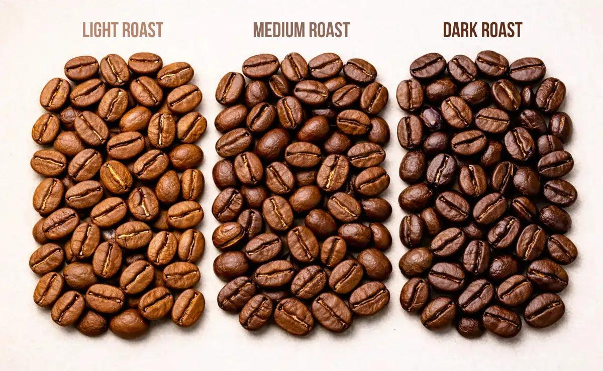

Principais tipos de café
O gênero Coffea reúne diferentes espécies, mas duas têm grande importância comercial: Coffea arabica (Arábica) e Coffea canephora (Canephora), que inclui grupos conhecidos como Conilon e Robusta. Elas apresentam diferenças de cultivo, composição e características sensoriais.

Café Arábica
O Arábica é frequentemente associado a bebidas com maior diversidade aromática, acidez perceptível e notas que podem lembrar frutas, flores, chocolate e castanhas. É cultivado em diferentes altitudes e regiões, e sua qualidade depende também da variedade, do manejo e do processamento.
Café Canephora: Conilon e Robusta
A espécie Canephora costuma apresentar maior resistência a temperaturas elevadas e sabor mais intenso, com corpo marcante. O Conilon tem grande relevância na produção brasileira, especialmente no Espírito Santo e em Rondônia. Esses cafés são utilizados em bebidas tradicionais, cafés solúveis e combinações com Arábica.
O que influencia o sabor?
- Origem: clima, solo e altitude da região produtora;
- Variedade: características genéticas da planta;
- Processamento: método utilizado para retirar a polpa e secar os grãos;
- Torra: tempo e temperatura aplicados aos grãos;
- Preparo: moagem, proporção de café e água, temperatura e método utilizado.